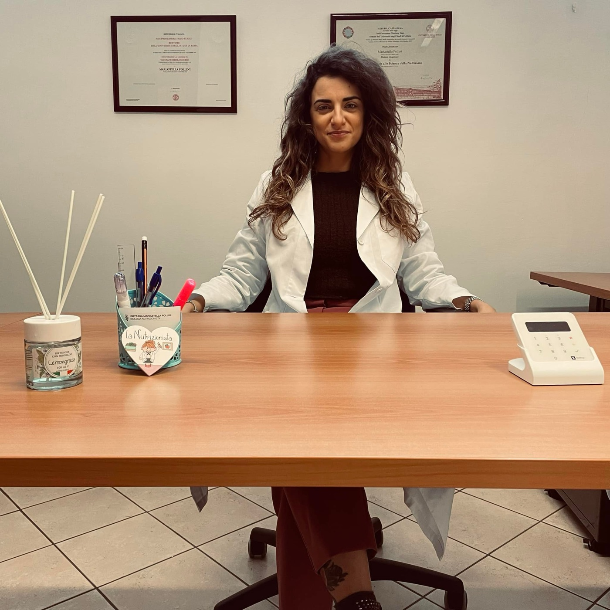
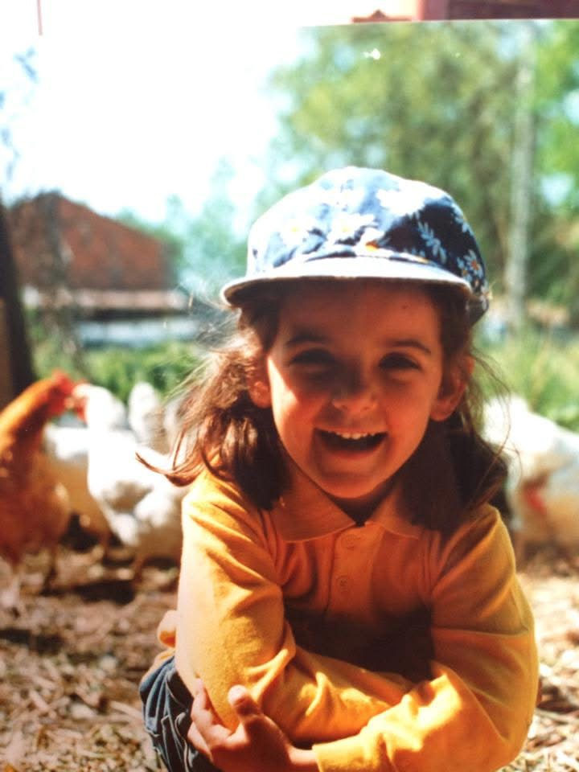
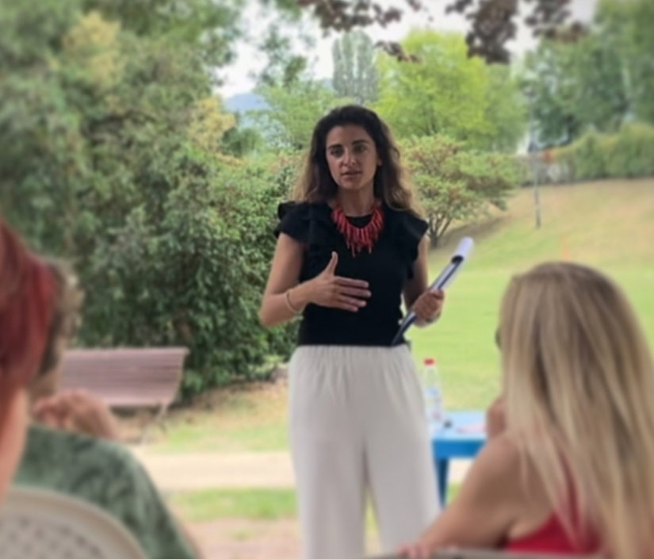

Chi sono
Sono Mariastella Pollini, biologa nutrizionista. Da sempre credo in una nutrizione umana, sostenibile e lontana dalle diete restrittive.
Mi piace definirmi un ponte tra quello che dice la scienza della nutrizione e quello di cui è fatta la vita di tutti i giorni: abitudini, obiettivi, ma anche convivialità, socialità e tradizioni di famiglia.

Tra l'orto e la cucina di mamma
Sono nata e cresciuta in campagna, con papà agricoltore e mamma cuoca. Il cibo e la natura sono sempre stati al centro della mia vita: tanti pomeriggi della mia infanzia li ho passati con mamma a raccogliere le uova del pollaio e a pulire e cucinare le verdure dell'orto.
Il cibo è casa, è stare insieme, è piacere. Ed è proprio questo che voglio restituire a chi ha passato anni a contare e a rinunciare.

Dalla biologia alla nutrizione
Laurea in Scienze Biologiche
Dopo il liceo scientifico scelgo Biologia per capire come funziona la vita in ogni sua forma. Mi appassiono alla biochimica e al rapporto tra cibo e corpo, e mi laureo all'Università di Pavia con una tesi di nutri-epigenetica, cioè su come i nutrienti dialogano con il nostro DNA.
Specialistica in Nutrizione, 110/110
Mi iscrivo alla laurea magistrale in Biologia applicata alle Scienze della Nutrizione all'Università degli Studi di Milano e mi laureo con 110/110, con una tesi sul ruolo protettivo delle antocianine sul tessuto cardiaco.
Tirocinio ed esame di Stato
Un anno di tirocinio ambulatoriale, poi l'esame di Stato e l'iscrizione all'Albo dei Biologi (AA_081197): da lì posso esercitare in piena autonomia come biologa nutrizionista.
I primi studi
Inizio a lavorare a Milano, dove nei due anni successivi gestisco tre studi e seguo centinaia di persone nei loro percorsi di cambiamento. Poi arrivano Voghera e l'Oltrepò.
La svolta online
Con il Covid devo ripensare da capo il mio modo di lavorare e inizio a seguire online le persone che prima vedevo in studio. Molte, finita la pandemia, scelgono di continuare così perché è più comodo e funziona allo stesso modo. È in quegli anni che affino un metodo pratico e flessibile, che aiuta le persone a ritrovare la forma e la serenità con il cibo senza diete rigide.
Tra Svizzera, Italia e online
Oggi vivo in Svizzera. Ricevo in presenza a Sementina (Bellinzona) e a Voghera, e online seguo persone ovunque, anche oltreoceano, con il mio percorso Equilibrium.
L'obiettivo è che tu non abbia più bisogno di me
Fare educazione alimentare significa imparare a inserire nella tua quotidianità tutto quello che ti piace, rispettando le linee guida per un'alimentazione sana e i tuoi fabbisogni.
Per questo ti consegno un piano alimentare e, insieme, ti insegno a usarlo, a cambiarlo, e poi a farne a meno. Imparerai ad ascoltare il corpo, a riconoscere fame e sazietà e a scegliere cosa mangiare in ogni situazione, con equilibrio e serenità.
"Non si può pensare bene, amare bene, dormire bene, se non si ha mangiato bene."
Virginia Woolf, Una stanza tutta per sé

Ti va di raccontarmi la tua storia?
Se vuoi capire come lavoro, scopri il percorso Equilibrium: partiamo da dove sei oggi e arriviamo dove vuoi arrivare.